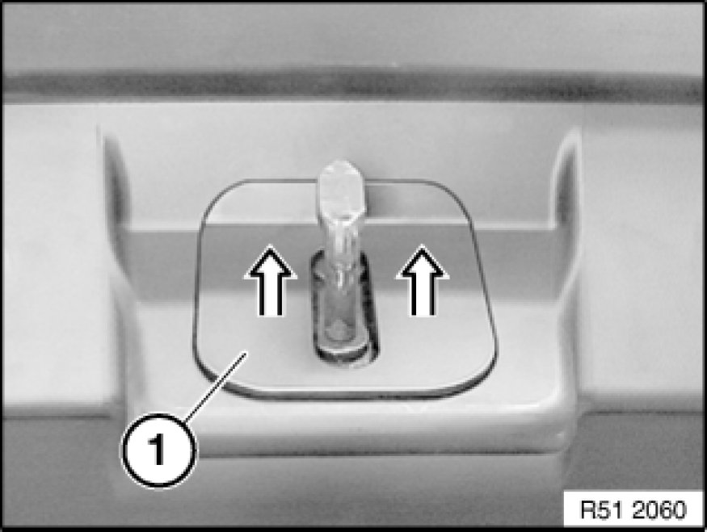
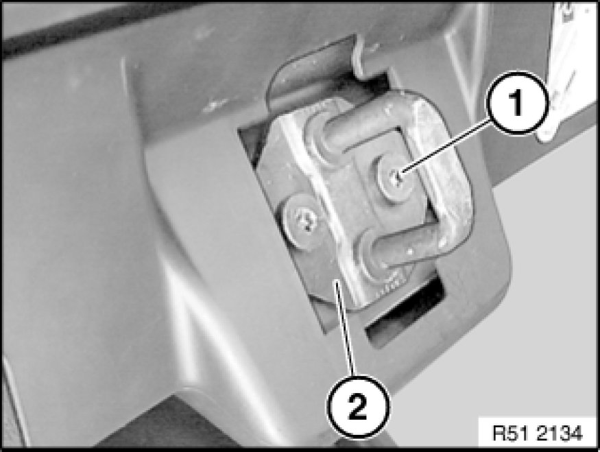
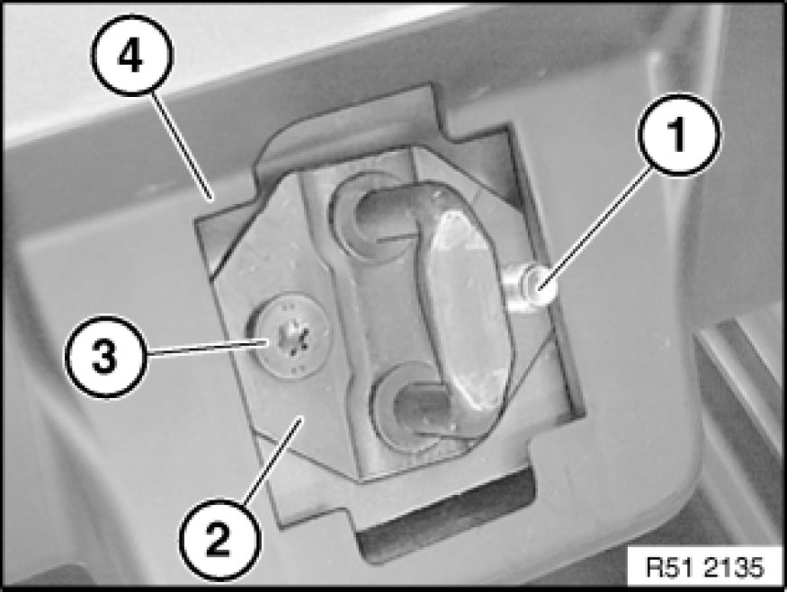
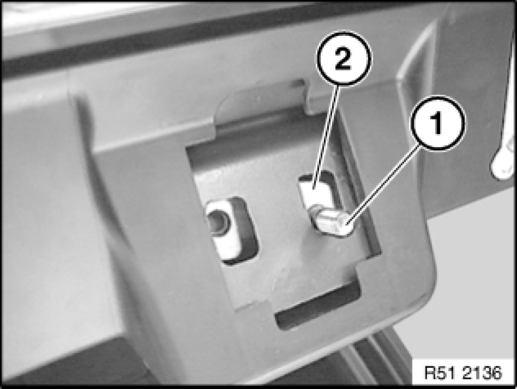

Trunk / Liftgate Striker: Service and Repair
51 24 130 - Removing and installing/replacing striker for rear lid lock (Touring)

Necessary preliminary tasks:
- Open rear lid.

Remove trim (1) on rear lid.

Release screw (1) on striker (2).

Screw threaded pin (1) into threaded plate of striker (2).
Unscrew bolt (3).
Remove striker (2) from rear lid panel (4).

Threaded pin (1) remains in threaded plate (2) until striker is fitted.
Important!
Do not close trunk lid, risk of damage.
Installation:
Adjust striker to lower section of trunk lid lock.

Important!
Striker and rear lid lock must not be greased.